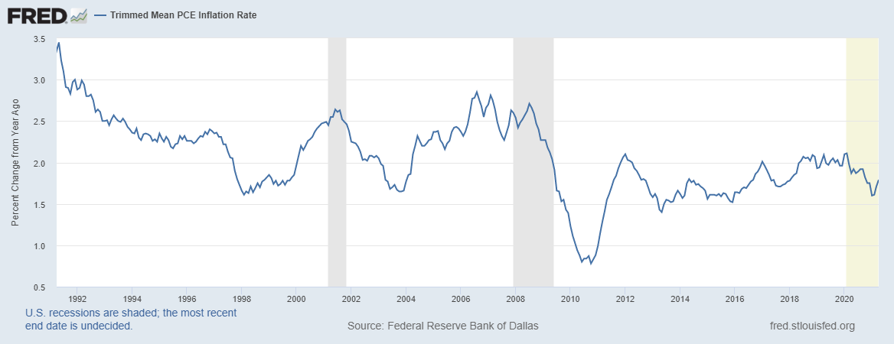
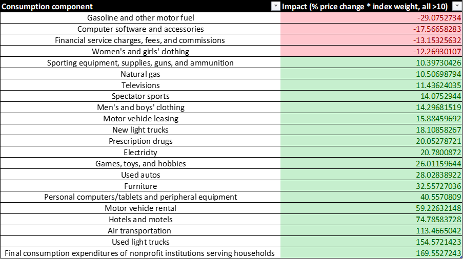
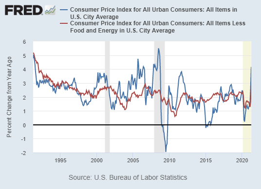
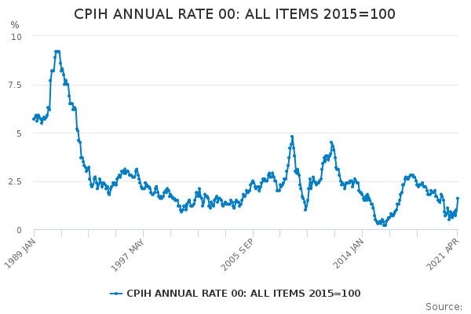
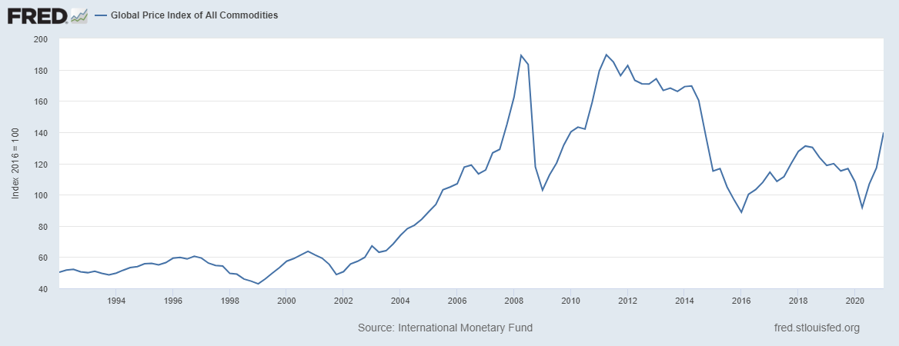
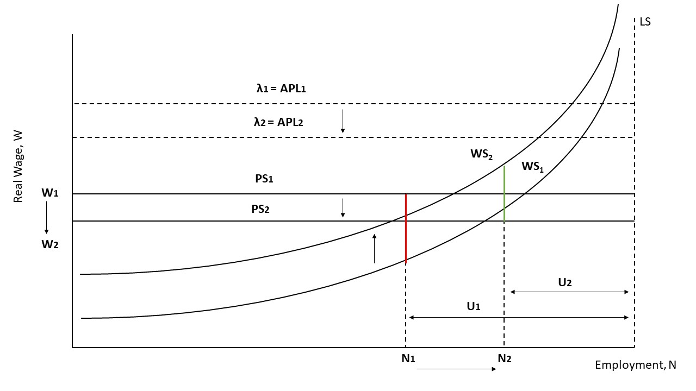
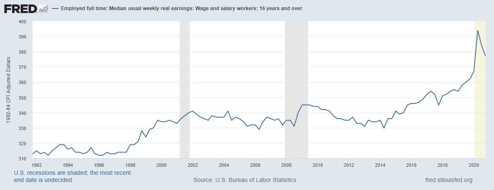

How much inflation do we expect in the future?
I can only guess at the answer, but I'd like to try to come up with an independent conclusion - which might be faulty or completely wrong. Nonetheless, I think it'll be fun to come up with an prediction, and to discuss inflation and costs of living more broadly, and see what we can learn along the way.
Firstly, what is inflation?
We might as well define terms! Encylopedia Britannica says 'inflation' is:
collective increases in the supply of money, in money incomes, or in prices. Inflation is generally thought of as an inordinate rise in the general level of prices.
There are a few different measures of inflation. The Bank Of England previously used the Retail Price Index (RPI). The standard measure is the Consumer Price Index (CPI). The Bank Of England (BofE) now prefers CPIH, which includes housing costs based on what someone renting a home might pay. The Fed has adopted Personal Consumption Expenditures (PCE), which accounts for a wider set of consumers.
I quite like the Household Costs Indices (HCI), an experimental measure by the BofE aiming to capture the rising expenditures households need to make to maintain their standard of living. This includes rent, mortgage payments, credit card and student loan repayments, land taxes etc. By the way, I believe shrinkflation is included in CPI(H) quality adjustments, - it is quite a severe hidden inflation! Sadly, there is not as much data for HCI, so I will use (PCE?) CPI and CPIH, focusing on the US and UK for now.
Here is a chart of 'Trimmed' PCE inflation - this means we exclude components of consumption with the most extreme price changes:
For each graph, I'm showing the last 30 years, and it ends in April 2021. Perhaps it's not fair to remove components with the most extreme price changes. Here's a table to show the components with the greatest impact that have been removed in the latest month (arbitrarily %chg.price * weight > 10).
We can probably ignore the negative 'impacts', which might reflect falls from historically high prices. The other components appear to be durable goods and services disrupted by the pandemic. As large businesses are allowed to open fully, I expect supply can be increased and demand for these products will become less extreme as consumers find substitutes. For example, you might prefer buying a sofa from a small business that has been closed since the start of the pandemic, or do an outdoor adventure activity rather than watching an American football game on TV.
Perhaps some of the durable goods are undergoing speculation. The annualized inflation of 'Used light trucks' prices by *138% seems excessive, if consumers want to avoid public transportation - often closed during the pandemic - or to avoid ride-sharing, because they could simply buy a cheap car. Perhaps the rising price is part of the reason to buy - it's a speculative investment as well as a vehicle. It seems to me that the conceptual line between the stock market and the basket of non-durable goods could be blurred more in the future.
And notice the sub-2% inflation rate adjusting for the extremes! As the economy reopens, I expect prices from a wider variety of components to increase substantially, driving this particular inflation rate above 2%: businesses will expect government support to wane, and so increasing prices might help the businesses survive or at least feel more cash rich.
The headline figure is from the chart of CPI for 'All Urban Consumers':
It looks like the rate of inflation has been changing faster during the pandemic. I personally think this relates to the exception nature of the lockdown - few businesses expected anything like this, and so lots of planning for the future has been greatly disrupted. But if conditions were allowed to return to normal, the disinflation might be nearly as fast as the rise in inflation, as these plans are reinstated.
Here's Britain's chart of CPIH inflation:
It doesn't look like inflation in Britain is particularly concerning. Sadly, we don't have numbers for HCI, which are only available until 2019. We should consider the possibility that inflation in the future could be a lot higher, being linked to higher higher commodity prices and higher wage demands.
Let's take a look at the price of a basket of commodities:
The index was higher in 2007-8 and 2011-14, so this isn't particularly worrying. Especially since the relationship between, for instance, oil prices and inflation has weakened over time. Some commodity prices have skyrocketed: lumber prices have increased 89% from April 2020 to April 2021, which could have an impact of house and furniture prices. But if we assume that this is fuelled by winding down of production (reduced supply) and a speculative fad (increased demand), prices should return to normal eventually.
I'd like to write more about this in the future, because it's particularly interesting. The Labour Market Model suggests we have experienced a productivity fall, necessitating a downward shift in the Price-setting curve - workers in the Labour Market have had fewer opportunities to gain skills, and skills are impaired without practice. The Beveridge curve, shown above, tracks the vacancy rate - jobs opportunities posted by firms / (employed + job opportunities posted by firms) - against the unemployment rate - unemployed / (employed + unemployed). Generally, a lower unemployment rate coincides with a higher vacancy rate, and vice versa. As the diagonal line appears to shift outwards, the labour market is becoming less efficient - fewer people have the skills firms demand. This seems to be the situation we are in now.
If unions become stronger, workers will demand higher wages to work effectively, so we would expect the Wage-setting curve to shift upward. As employment increases, this causes a positive bargaining gap, shown as the green candle:
This positive bargaing gap means firms will set wages higher than expected inflation. Thus products will become more expensive, leading to higher (than expected) inflation. This can set off a wage-price spiral, where employees demand even higher wages to offset the higher inflation, leading to higher inflation etc. Since the labour market is becoming less efficient, perhaps some skilled workers will demand higher (than inflation) wages. And frankly I think the lucrative world of equity and crypto could be making work less desirable - if you could earn enough money to retire from a single trade, why not stay in this market? Of course, it isn't really that lucrative, but it's a popular narrative. If so, people will adjust their wage demands upwards, as a collective, based on what some people have made in equity and crypto.
It would be nice to know who the major unions are, what they are demanding, what they are likely to get and so on. I think I've written enough for one page, so maybe I'll consider this next time. It'd be a lot of fun to try to do a simple simulation and see what figure I come up with. But for now, I'll predict average inflation higher than 2%, perhaps near 3%, between, say, 2020-2025. (Assuming 1990s inflation is a good guide.) By the time the crypto craze is over, and equity starts to crumble, I reckon people will feel less wealthy, and thus will make less substantial wage demands.